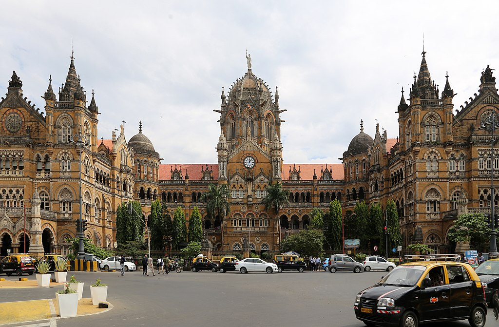

Chhatrapati Shivaji Maharaj Terminus (CST), formerly known as Victoria Terminus, is one of the busiest and most iconic railway stations in India. It serves as the headquarters of the Central Railway and is recognized as a UNESCO World Heritage Site.
The station was built in 1887 in honor of Queen Victoria's Golden Jubilee. Designed by British architect Frederick William Stevens, CST combines Victorian Gothic Revival and Indian architectural elements.
CST features stunning Indo-Saracenic architecture, high domes, pointed arches, and turrets. The intricate stone carvings and stained glass windows add to its grandeur.
Location: Mumbai, Maharashtra, India
Timings: Open 24 hours
Entry Fee: Free
Best Time to Visit: November to February
CST is well-connected via local trains, buses, and taxis. It serves as a major railway hub for Mumbai and the rest of India.
For more details, visit these websites:
⬅ Back to Home